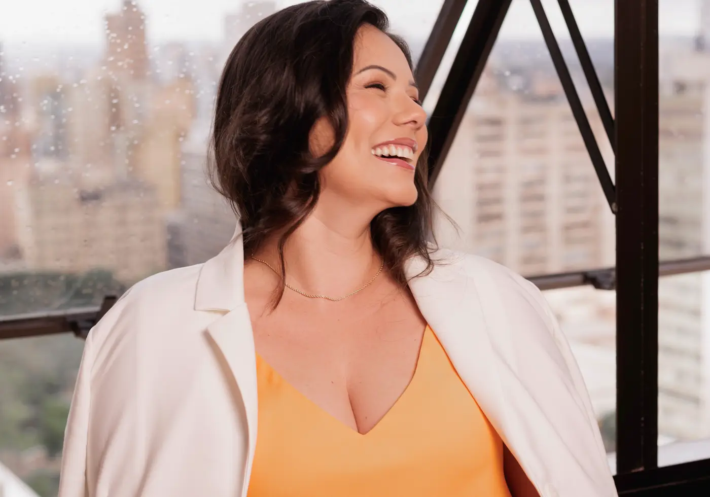
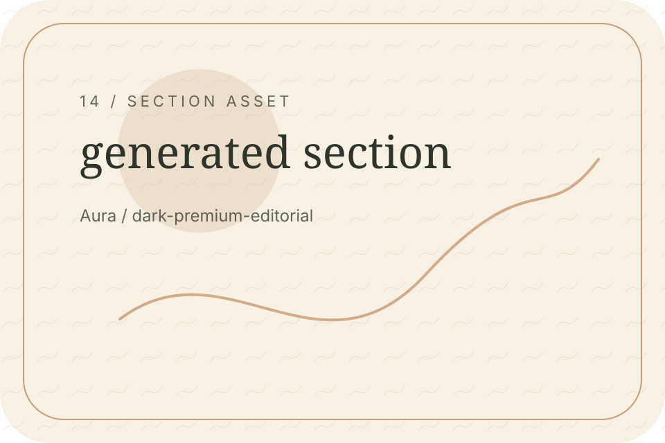
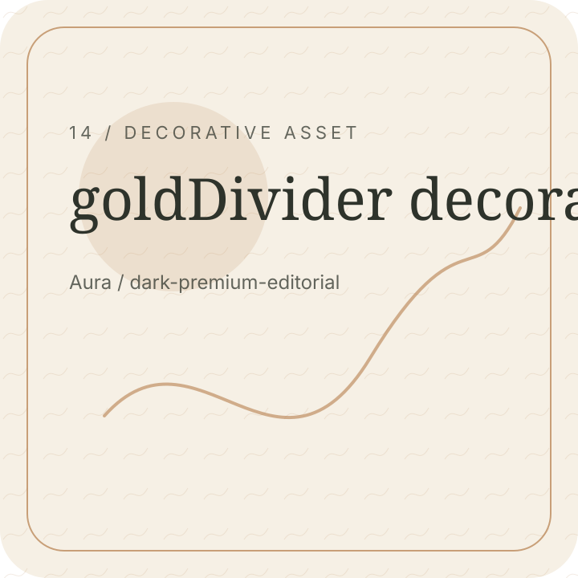

Aura / Values Hero
Care values
Four principles shape the Sofiati experience.

Aura / Values in Consultation
In consultation
These values shape how questions, goals, and next steps are discussed.

Aura / Related Guidance
Related guidance
Continue with care or results guidance.
Aura / About Mission Bridge
Brand story
Read more about the purpose behind the experience.
Aura / Cuidado
Care
Care begins with listening closely and respecting individual context.
Aura / Naturalidade
Naturality
Naturality means planning that respects your features and comfort.
Aura / Visual Break
Values guide choices
The experience should feel thoughtful from start to finish.

Aura / Final CTA
Begin with care
Send a question or request an evaluation.